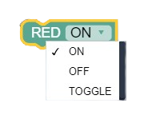
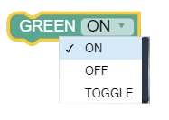
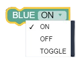

1. LED Control
PlutoBlocks for Primus X/V4, Primus X2 & Primus V5 include three programmable status LEDs that provide real-time visual feedback about your drone's state and operations.
This category contains powerful blocks to control all three LEDs independently, allowing you to set each one to ON, OFF, or TOGGLE states based on your custom logic.
Red LED
Sets the state (ON/OFF/Blink) of the Red LED.
Real-time emergency warning system that activates on sensor fault, low battery threshold, or collision detection for immediate visual feedback.
Green LED
Sets the state of the Green LED.
Flight-ready status indicator that signals drone armed state, autonomous mission initialization, or successful system calibration completion.
Blue LED
Sets the state of the Blue LED.
Network connectivity or telemetry link status display, sensor calibration phase indicator, or authentication state confirmation for secure operations.
2. Create Function
Create reusable code blocks by grouping multiple PlutoBlocks into custom functions that can be called repeatedly throughout your program.
Functions help organize complex logic, reduce code duplication, and make your drone programs easier to maintain and debug. Define once, use everywhere.
Define Function
Groups several blocks into a single named action.
Modular safety validation routine that encapsulates battery health checks, RC signal verification, and sensor calibration into reusable custom logic.
Call Function
Executes the logic stored within a defined function.
Execute recurring drone operations like safety pre-flight checks, state monitoring routines, or complex maneuvers repeatedly throughout autonomous missions.
Custom C++
Embed raw C++ code for advanced low-level tasks.
Advanced drone algorithms, integration of existing flight libraries, real-time signal processing, or high-performance computational tasks beyond standard blocks.
3. Timer
Control timing and delays in your drone programs using millisecond-precision timers for sequence management.
Set countdowns for specific actions, trigger events after delays, or create timed sequences. Perfect for landing delays, hover periods, or sensor data collection intervals.
Set Timer
Starts a millisecond countdown interval.
Precise hover duration timing, sequential mission phase management, sensor data collection intervals, or timed flight pattern transitions.
Timer Done?
Checks if the timer has reached zero.
Time-triggered autonomous landings, mission phase completion detection, or sequential command execution based on elapsed duration thresholds.
4. Peripheral Control
Interface with external hardware including analog sensors, digital outputs, and servo motors connected to your drone controller.
Read analog voltages from sensors, control GPIO pins, or drive servos for payload manipulation. Expand your drone's capabilities with custom hardware integrations.
Read ADC
Reads analog voltages (0-3.3V) as raw digital numbers.
Distance sensor integration for obstacle avoidance, light intensity monitoring, environmental condition measurement, or custom sensor payload data acquisition.
Digital Write
Sets a digital pin to HIGH (1) or LOW (0).
External relay control for high-power devices, warning beacon activation, landing gear deployment, or payload mechanism triggering.
Servo Control
Controls the angle of standard PWM servos.
Payload delivery systems, mechanical gripper control, camera gimbal positioning, autonomous object manipulation, or precise mechanical actuation tasks.
5. Flight Command
Execute drone flight operations including takeoff, landing, arming, and special movements to control your drone's behavior.
Send high-level commands to the flight controller for autonomous or triggered drone movements. These blocks form the foundation of your flight automation scripts.
Take Off
Launches drone to automated height.
Scheduled launch sequences with controlled delay intervals, autonomous mission initiation, or trigger-based flight launches.
Land
Triggers a stable descent.
Emergency landing procedures on low battery, auto-landing at mission completion, or failsafe descent on signal loss.
Arm
Enables motor power.
Flip
360-degree backflip trick.
Disarm
Instant motor kill-switch.
Stop motors immediately if "is_crashed_x2" is True.
6. Motor Drive
Control individual motors on your drone for precise thrust and direction management across all motor ports.
Set motor speeds for bi-directional ground movement or propeller thrust values for flight. Useful for testing, balancing, and advanced manual flight stabilization.
Motor M1
Reversible motor (1000-2000 PWM).
Autonomous ground rover locomotion with precise bi-directional movement control or mechanical landing gear actuation during flight sequences.
Motor M2
Reversible motor (1000-2000 PWM).
Automated cargo bay door sequencing, retractable payload mechanisms, or remote-controlled mechanical actuator management.
Motor M3
Reversible motor (1000-2000 PWM).
Multi-axis camera gimbal stabilization, 360-degree payload rotation control, or sensor alignment adjustment during autonomous flight.
Motor M4
Reversible motor (1000-2000 PWM).
Automated winch and pulley systems for lift operations, secondary payload deployment/retrieval, or mechanical load control.
Motor M5
Propeller thrust (1000-2000 PWM).
Individual propeller performance testing, thrust balancing verification, or asymmetric flight pattern generation.
Motor M6
Propeller thrust (1000-2000 PWM).
Motor response curve tuning, connectivity verification, or differential thrust maneuvers for advanced flight control.
Motor M7
Propeller thrust (1000-2000 PWM).
Emergency descent activation, safety cutoff mechanisms, or controlled emergency landing procedures.
Motor M8
Propeller thrust (1000-2000 PWM).
Real-time flight stabilization, asymmetric thrust compensation, or aerodynamic load balancing during dynamic maneuvers.
7. Remote Control
Read and override remote control inputs from your transmitter or create programmatic flight control overrides.
Monitor stick positions, trigger actions based on user input, or implement autopilot features by overriding RC channels with software-controlled values.
Read Stick Position
Reads raw joystick value (1000-2000).
Gesture-based flight command detection, advanced manual control response logic, or transmitter input analysis for trick activation.
Set Control Value
Overrides stick inputs with software values.
Autonomous flight path execution, augmented reality drone control, or programmatic RC override for hybrid manual-autonomous missions.
8. Sensor Data
Access raw sensor data from your drone's IMU, accelerometer, gyroscope, and battery management system for custom logic.
Read acceleration forces, rotational rates, magnetic heading, battery voltage, and health status to make intelligent decisions about flight safety, duration, and performance optimization.
Accelerometer X/Y/Z
Linear acceleration in G-forces on selected axis.
Impact-triggered safety responses, gesture-based flight control through throw-to-launch detection, or flight intensity monitoring for maneuver analysis.
Gyroscope X/Y/Z
Rotational velocity (degrees per second) on selected axis.
Spin rate-triggered actions, rotation speed monitoring for acrobatic maneuvers, or angular velocity-based flight behavior modification.
Magnetometer Heading
Compass heading (0-360 degrees).
Autonomous waypoint navigation, compass-based return-to-home functionality, or cardinal direction-aware mission planning.
Battery Voltage
Returns raw battery cell voltage (mV).
Real-time battery health monitoring, voltage-triggered failsafe procedures, or flight-time estimation based on remaining cell voltage.
Battery Health
Battery percentage (0-100%) and cycle count.
Predictive battery life calculation, charge cycle monitoring for maintenance alerts, or health-based mission planning constraints.
Temperature Sensor
Internal controller temperature (°C).
Thermal throttling safety protocols, CPU overheat detection with visual/audio warnings, or temperature-based mission abort procedures.
9. Current State
Monitor your drone's real-time state including attitude angles, altitude, and position data from the flight controller.
Access roll, pitch, yaw, and altitude readings to implement stabilization logic, altitude ceilings, or feedback-based autonomous flight routines.
Orientation Angles
Real-time attitude in degrees.
Precision attitude maintenance for level flight, acrobatic maneuver verification, or feedback-based stability control algorithms.
Current Height
Altitude relative to takeoff (cm).
Altitude ceiling enforcement, terrain-aware autonomous flight, or altitude-triggered mission phase transitions.
10. Desired State
Set target flight angles for your drone to reach specific orientations while the flight controller maintains stabilization.
Command desired pitch, roll, and yaw angles to create smooth automated flight patterns, circular movements, or precision positioning routines.
Set Target Angle
Commands flight controller to reach specific angle.
Circular flight pattern generation, coordinated banking maneuvers, or precision angle-based autonomous flight routines.
11. Flight Mode
Query active flight modes to determine if your drone is operating in headfree mode or other specialized flight configurations.
Use flight mode information to trigger mode-specific behaviors or provide feedback through LEDs and other indicators.
Is Headfree?
Checks if drone is in direction-relative mode.
Mode-specific LED indicators, flight mode confirmation display, or mode-dependent behavior switching for dynamic flight control.
12. Flight Status
Monitor critical drone status including armed state, crash detection, and flight safety conditions.
Implement emergency handling, safety checks, and status-dependent behaviors. Build robust programs that respond to real-time operational state changes.
Is Armed?
Returns True if motors are unlocked.
Motor command safety gates, flight-ready status confirmation, or armed state dependent automation routines.
Crashed?
Returns True on heavy impact.
Immediate motor cutoff on collision, impact-based emergency procedures, or crash recovery logging and notification.
Signal Loss?
Returns True if RC signal is disconnected.
Failsafe landing sequences, loss-of-link recovery procedures, or signal restoration monitoring and alerts.
Battery Low?
Returns True when battery below threshold.
Visual/audio battery warning systems, automatic return-to-home activation, or mission abort procedures on critical battery levels.
Flying?
Returns True if drone is airborne.
Airborne-only command gating, aerial maneuver execution guards, or flight phase dependent behavior modifications.
13. Console
Debug and monitor your programs by sending messages and sensor values to the Pluto Monitor application in real-time.
Track program flow, display live sensor data, and verify that your automation logic is executing correctly during flight tests.
Print Message
Sends text to the Pluto Monitor app.
Real-time mission debugging, autonomous logic verification, or flight event logging for post-mission analysis.
Print Text + Value
Shows a label with a live sensor number.
Live sensor telemetry monitoring, variable state tracking during flight, or sensor data logging for performance optimization.
14. Logic
Create conditional decision-making in your programs using if-then statements and logical operators.
Build intelligent automation by combining multiple conditions with AND, OR, and NOT operators to control complex flight behaviors.
If This, Then That
Decision making block based on conditions.
Conditional flight path planning, sensor-based autonomous decision making, or altitude-dependent thrust adjustments.
Both True? (AND)
Combines two conditions.
Complex multi-factor decision logic, failsafe condition combinations, or cooperative sensor-based automation triggers.
15. Loops
Repeat code blocks using for loops and while loops to execute sequences multiple times without duplication.
Build repetitive flight patterns, pattern-based LED indicators, or condition-dependent flight sequences that run until specific criteria are met.
For Loop (Counter)
Repeats an action for a specific count.
Repetitive status indication patterns, sequential motor testing routines, or counted autonomous flight sequences.
Repeat While
Repeats code as long as a condition is met.
Persistent condition monitoring, altitude-dependent motor control, or sensor-driven continuous operation loops.
16. Math
Perform mathematical operations including clamping, rounding, random values, and other calculations.
Process sensor data, constrain control values to safe ranges, generate random patterns, or compute complex flight algorithms.
Clamp (Limit)
Keeps a number inside a range.
Motor control safety bounds enforcement, sensor value normalization, or command output range validation.
Random Integer
Picks a whole number randomly.
Randomized flight patterns for coverage missions, stochastic behavior simulation, or non-deterministic autonomous routines.
Round
Removes decimals from a number.
17. Variables
Store and manage data using variables to track values throughout your program's execution.
Create counters, store sensor readings, track state information, and build dynamic flight logic that adapts based on stored data values.
Store Data
Creates a temporary memory to hold a number.
Flight reference point tracking, mission state persistence, or historical data logging for performance analysis and recovery sequences.